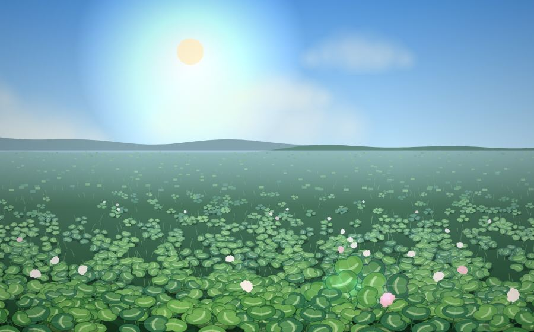
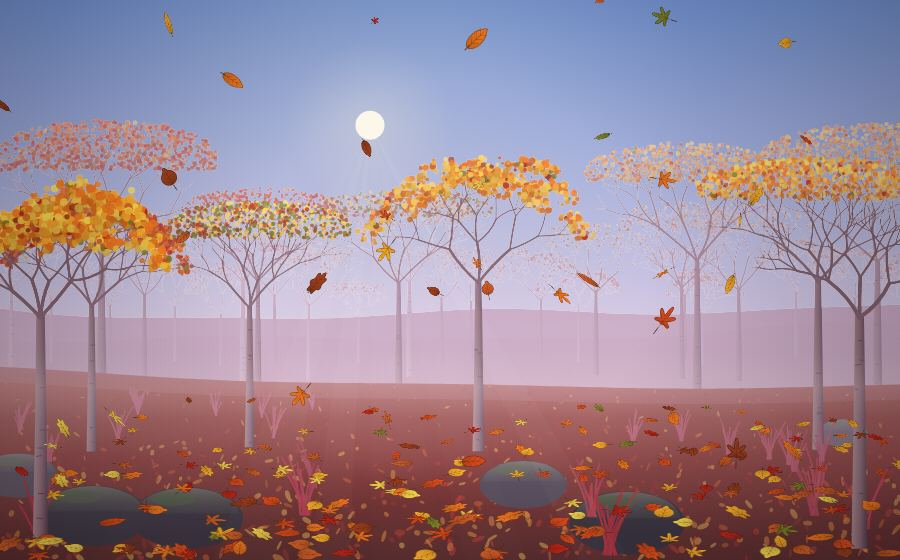
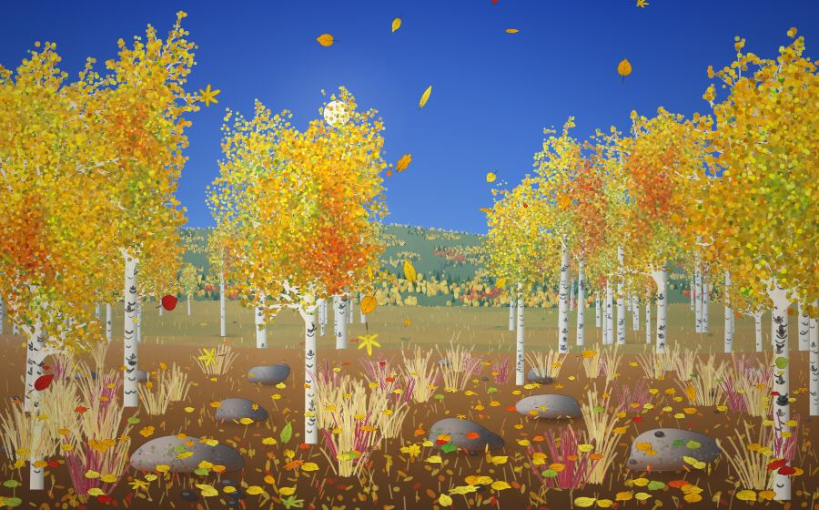

Clover Field Relax
A meadow under a sky that drifts from starry night through dawn, midday and dusk. Touch a clover and it rises. At night the field glows.
HiddenFour-leaf clovers

Fall Leaves Relax
Your finger is the wind. Swirl the leaves, listen to the rustle in the trees, and tap Gust to sweep the ground clean.
HiddenSilver leaves

Aspen Grove
A variation of Fall Leaves Relax, built from the Flagstaff and Colorado photos: white trunks, golden crowns, red grass and stones.
HiddenSilver leaves